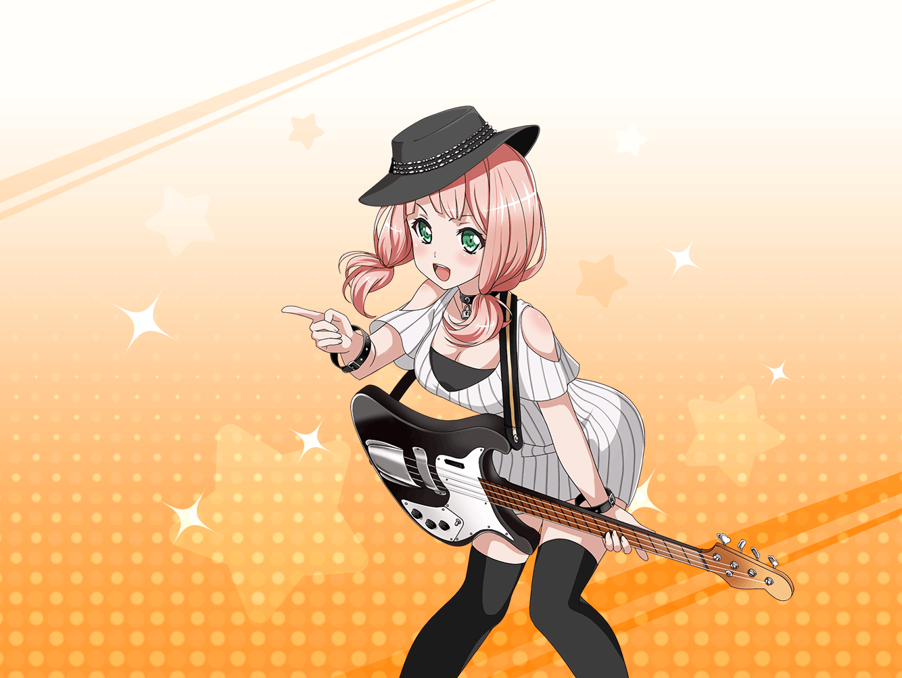

ひまり
あっ、お疲れ様でーっす！！
ひまり
はぁ～、さっきのライブ、
ミスしないか緊張しちゃいましたよ～！
ひまり
ベースってギターと比べると、地味に見えるかもしれないけど、
リズム隊は、バンドを支える大事なポジションだから
責任重大ですよね～
ひまり
まあ、バンドですし、
責任の重さはみんな一緒なんですけどね
ひまり
私、バンドを支えるポジションが向いてるように見えます？
ホントですか！？ えへへっ、うれしいなあ
ひまり
私ってみんなが仲良くいられるように、
もっと笑えるようにって、いつも考えてるんだけど、
すぐ空回っちゃうんです……
ひまり
でも、バンドの中でベースを弾いてみると
びっくりするぐらい、すんなりできたんです！
みんなのこと、うまく支えてるぞ〜！ って感じがして！ ふふっ
ひまり
だから、ベースが向いてるって言ってもらえて
すっごく嬉しいですっ！
ひまり
他のメンバーですか？
ひまり
えーっと、そうだなあ……この前も話しましたけど
いい仲間だと思いますっ！
私、みんなのことが大好きなんです！
ひまり
みんながいれば、
どんなことでも乗り越えられるんじゃないかなって
ひまり
そうそう、この衣装も、みんなで考えたんですよ～！
ひまり
本当はおそろいにしようって話してたんですけど、
モカが『みんな好きなやつ着ればいいじゃん〜』って言い出して
蘭とかも『おそろいって、どーなの？』って言ってて……
ひまり
蘭はおそろいが恥ずかしいみたいで、ふふっ
ひまり
……で、結局今の衣装になったんです！
一応、私の中のロックな部分を出してみましたっ！
ひまり
えへへ、どうですか？
似合ってますか？ わあ、ありがとうございますっ！
ひまり
……あっ、いけない！ 外でみんな待ってるんだった！
それじゃ私、そろそろ行きますね！
ひまり
また、私達の話聞いてください！
本当に、自慢の仲間なんで、いくらでも話せちゃいますよ～！
ひまり
えへへ。それじゃ、お疲れ様でしたっ！